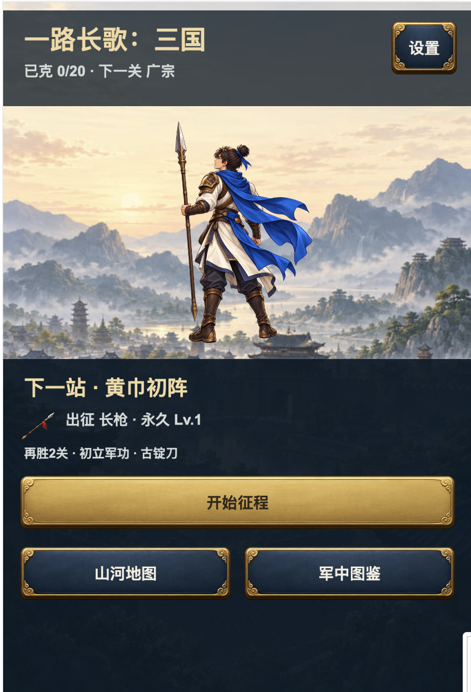

首页与箭雨 · 0.12.7
连续山水、大幅主角；兵力越多，齐射越密。保留真实伤害、音效、二十关和存档。
进入实际游戏 完整验证与未完成项以下是当前 Cocos iOS 模拟器运行画面和原速录屏。射击对比使用固定人数的隔离场景；并非真机或通关录像。
首页变化
用户提供的旧首页

旧截图视口不同，不冒称同状态对照。同场景兵力与箭雨
10 人 · 每轮 8 支
80 人 · 每轮 42 支
300 人 · 每轮 96 支
军械变化与真实路线
80 人火箭
80 人连弩 · 连射三轮
第 11 关实际路线片段
性能未全绿：录屏中高兵力和第 11 关仍有慢帧，详见报告。手机未覆盖安装，Mac 锁屏期间未完成手动点击核验。